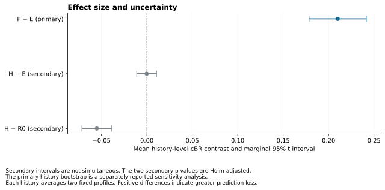
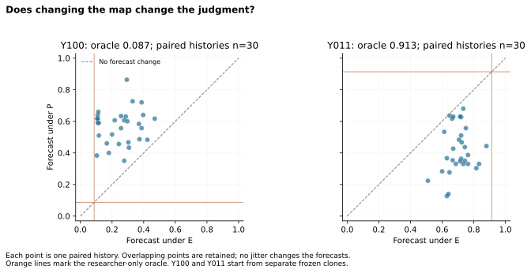
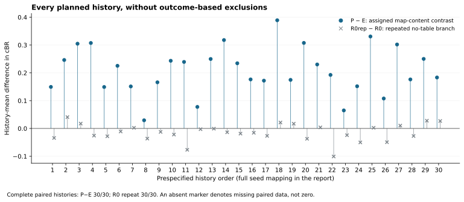

REM is an auditable instrument for studying shared reliability representations in artificial teams, with the underlying factual record held available.
30/30 histories complete; P−E mean 0.21002870; 95% t interval [0.1785239938919171, 0.2415334012718417]; two-sided p=3.83281e-14; n=30.
The sample is selected prospectively from formation data, and the two hypothetical Y profiles start from separate frozen clones. These estimates do not test the original long-term hypotheses or establish a human organizational mechanism.
python tools/run_targeted.py verify --recording evidence/luna-targeted-30histories python tools/run_targeted.py replay --recording evidence/luna-targeted-30histories --output runs/replay python tools/analyze_targeted.py evidence/luna-targeted-30histories --output runs/analysis.json
Install the locked dependencies first. Recorded-response replay is not a fresh-model replication. Full replay requires a completed archive. The source, protocol, actual traces, complete estimates and limitations are linked above.


